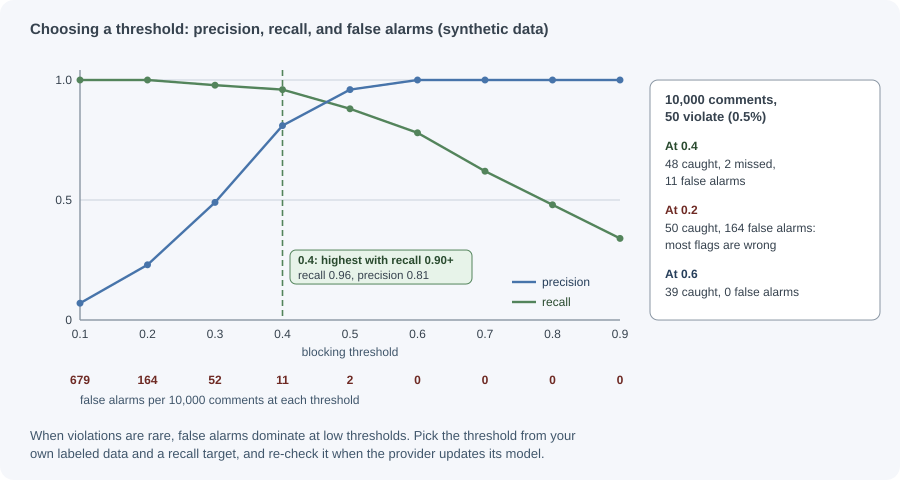
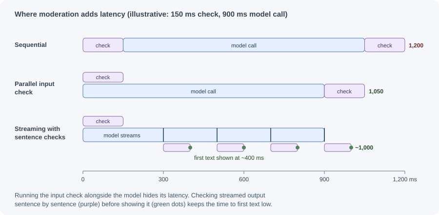

Guardrails and Content Moderation¶
Guardrails are the checks around a model call that decide whether an input may reach the model and whether an output may reach a person. Content moderation is the most common of them: classifying text or images against harm categories such as harassment, hate, sexual content, violence, and self-harm. In TaskFlow, moderation applies to what users type into the Assistant, to what the model writes back, and to AI summaries and comments that the whole project will read.
This lesson covers moderation APIs and open-weight classifiers, how to write a content policy and turn classifier scores into actions, how to choose thresholds when violations are rare, where guardrails add latency and how to hide most of it, and which guardrail libraries are maintained as of November 2026. Attacks on the application itself are covered in prompt injection and defenses; removing personal data before it reaches a provider is covered in privacy, PII, and data retention.
Why it matters¶
An AI feature produces content in your product's name. If the Assistant drafts a threatening message to a teammate, or a meeting summary repeats an abusive remark to the whole project, users will hold TaskFlow responsible, not the model vendor. Some content needs a different response entirely: a note in which someone says they want to hurt themselves calls for a supportive reply, not an error message.
The opposite failure is just as real. A security team's notes are full of "attack", "kill the process", and "exploit"; a filter tuned for a children's app will block their work. Every check also adds latency and cost to every request. Good guardrails are therefore not "block as much as possible" but a written policy, measured classifiers, thresholds chosen from data, and a clear answer for what happens when a check is slow or down.
Real-world usage¶
- OpenAI. The
moderation guide
describes
omni-moderation-latest, which classifies text and images (not audio) into categories such as harassment, hate, illicit, self-harm, sexual, and violence. It says the endpoint "is free to use", advises to "treat moderation scores as signals for your application's policy, not as an automatic blocking decision", and warns that custom thresholds oncategory_scores"may need recalibration over time" because the model is upgraded. - Microsoft. Azure AI Content Safety scores hate, sexual, violence, and self-harm on a 0-7 severity scale for text, and adds Prompt Shields, protected-material detection, and a task-adherence API for agents. Its documentation states plainly that "classification models can produce false positives and false negatives". Several preview features, including groundedness detection, are scheduled to retire on April 30, 2027.
- Amazon. Bedrock Guardrails
combines content filters (hate, insults, sexual, violence, misconduct,
and prompt attack), denied topics, word filters, sensitive-information
filters that block or mask PII, contextual grounding checks, and
Automated Reasoning checks. The
ApplyGuardrailAPI runs a guardrail "without invoking the foundation models", so it can screen traffic to any provider. - Google. In the Gemini API, safety settings are adjustable per category, the default threshold is "Off for Gemini 2.5 and later models", and core harms such as child safety are "always blocked and cannot be adjusted". For model-agnostic screening, Google Cloud offers Model Armor.
- Open-weight classifiers. Meta's Llama Guard 4 is a 12B multimodal classifier that labels prompts and responses against the 14 MLCommons hazard categories. OpenAI's gpt-oss-safeguard (20b and 120b, Apache 2.0) is a "safety reasoning model" that applies a policy you write in plain language.
Popular tools and providers: OpenAI Moderation API, Azure AI Content Safety, Amazon Bedrock Guardrails, Google Cloud Model Armor, Llama Guard 4, gpt-oss-safeguard, ShieldGemma, IBM Granite Guardian, NVIDIA NeMo Guardrails, and Guardrails AI.
How it works¶
Where guardrails sit¶
A guardrail can run at several points. NVIDIA's NeMo Guardrails names five: input rails on the user's message, dialog rails that steer the conversation, retrieval rails on retrieved chunks, execution rails on tool inputs and outputs, and output rails on the model's answer. Most applications need three of them:
- Cheap deterministic checks first: length limits, rate limits, blocklists, and PII masking. They are fast, free, and predictable.
- Input classifiers: moderation and prompt-attack detection on the user's message, run in parallel with the model call.
- Output checks: moderation of the answer, schema validation, grounding checks for RAG answers, and the link and image filter.
![Diagram: user input passes cheap checks (length, rate limit, blocklist, PII mask); then the input classifiers (moderation, prompt attack) and the model call start at the same time, and the model is aborted if the input is flagged; the classifiers' verdict and the model's answer go to the output checks (moderation, schema, grounding, links) before the answer is rendered or streamed; every check reports scores to one versioned policy that chooses an action: allow and log, mask personal data, warn so the user can edit, supportive reply for self-harm intent, human review, or block with a clear message.](../guardrail-pipeline.svg)
Kinds of checks¶
| Kind | Examples | Strengths | Weaknesses |
|---|---|---|---|
| Rules and blocklists | Regex, word lists, Bedrock word filters | Fast, predictable, explainable | Brittle; miss paraphrases; flag innocent words |
| Hosted moderation APIs | OpenAI moderation, Azure Analyze text | Calibrated scores, many languages, no model to run | Fixed taxonomy; data leaves your systems |
| Configurable guardrail services | Bedrock Guardrails, Foundry guardrails, Model Armor | Denied topics, PII masking, grounding in one place | Tied to one cloud; configuration drift |
| Open-weight classifiers | Llama Guard 4, ShieldGemma, Granite Guardian | Run in your network; tunable | You host GPUs; you own updates |
| Policy-reasoning models | gpt-oss-safeguard, a general model with a policy prompt | Your own written policy; handles nuance | Slower and costlier per call |
| The model's built-in filters | Gemini safetySettings |
No extra call | Only for that provider; defaults vary |
Each provider has its own taxonomy, so map their categories to yours rather than to each other:
| TaskFlow category | OpenAI | Azure | Bedrock | Llama Guard 4 |
|---|---|---|---|---|
| Harassment and threats | harassment, harassment/threatening |
Hate, Violence | Insults, Violence | S1, S10 |
| Hate | hate, hate/threatening |
Hate | Hate | S10 |
| Self-harm | self-harm, /intent, /instructions |
Self-harm | none (denied topic) | S11 |
| Sexual content | sexual, sexual/minors |
Sexual | Sexual | S3, S4, S12 |
| Illegal activity | illicit, illicit/violent |
none (custom category) | Misconduct | S1, S2, S9 |
The table is approximate by design: categories overlap and their definitions differ, which is one reason to evaluate any provider on your own labeled examples before you switch.
Writing the policy¶
Write the policy before choosing a classifier. A policy says, for each category, what counts as a violation in this product, with boundary examples, where it applies, and what happens. TaskFlow is a workplace tool, so its policy differs from a fiction app's or a children's app's:
| Category | Surfaces | Action | Why |
|---|---|---|---|
| Sexual content involving minors | All | Block and report through the legal process | Never acceptable; zero tolerance |
| Threats against a person | All | Block | Real risk to a teammate |
| Self-harm intent | All | Supportive reply, no error | Blocking a person in distress helps nobody |
| Self-harm instructions | Assistant output | Block | The product must not produce them |
| Hate | Shared comments | Human review | Context matters (quotes, moderation reports) |
| Harassment, milder | Shared comments | Warn, let the author edit | Most cases are heat of the moment |
| Graphic violence | All | Warn | Incident reports may describe injuries |
Principles that hold across products:
- Policy as data. Keep thresholds and actions in a versioned file, not scattered through code, and record the policy version with every decision so you can explain it later.
- More than block and allow. Masking, warning, supportive replies, and review queues are often better outcomes than a refusal.
- Explainable messages. Say what policy was hit and what the user can do; never show raw scores or category codes.
- Appeals and review. Borderline decisions on content that other people see should be reviewable by a person, and reviewed labels feed back into threshold tuning.
Thresholds, false positives, and base rates¶
A classifier returns a score; a threshold turns it into a decision. Two measures describe the result:
- Precision: of the items flagged, the share that really violate.
- Recall: of the items that violate, the share that get flagged.
When violations are rare, precision collapses at low thresholds even for a good classifier. Suppose 0.5% of 10,000 shared comments (50) violate the harassment policy, the classifier catches 96% of them, and it wrongly flags 1% of the 9,950 benign comments:
true positives = 0.96 x 50 = 48
false positives = 0.01 x 9,950 = 99.5, about 100
precision = 48 / (48 + 100) = 0.32
Two out of three flags are wrong, although the classifier is "99% accurate" on benign text. This is the base-rate effect, and it is why review queues fill with false alarms. The sweep below, run on a synthetic set with exactly this base rate, shows how precision and recall move as the threshold rises.

Three things move thresholds in production: the provider upgrades its model (OpenAI says so explicitly), your traffic changes (a new customer in a new language or industry), and attackers adapt. Keep a labeled set per category, from review decisions and red-team cases, and re-run the sweep when any of the three changes. The S7 lessons on building evaluation sets apply directly.
Language matters too. Azure trained and tested its harm models on eight languages and says they "can work in many other languages, but the quality might vary". If TaskFlow customers write in Hindi or Polish, measure those languages separately; a threshold tuned on English can miss most violations in another language.
Latency and placement¶
Each check is a network call or a model inference, and the order you run them in decides how much of that latency users feel.

- Run input checks in parallel with the model. Start both at once; if the check flags the input, abort the model call. The check costs nothing in latency when it is faster than the model, and the aborted call wastes only the tokens generated so far.
- Check output before it is shown. For non-streaming responses, this is one more call. For streaming, buffer the text into sentences or short chunks and check each before releasing it; showing raw tokens and retracting them later means the user has already read them.
- Set a deadline and a fail mode for every check. When a moderation call times out, a feature can fail closed (block or hold the content) or fail open (continue and log). Fail closed where the harm of a miss is high, such as public comments or child-facing products; fail open where it is low and availability matters more.
- Avoid paying twice. Cache verdicts for identical text (keyed by a hash of the normalized text and the policy version), and skip re-checking content you generated and checked a moment ago.
Policy-reasoning models such as gpt-oss-safeguard read your whole policy and reason before answering, so each call is much slower and costlier than a dedicated classifier. They fit offline labeling, appeal reviews, and low-volume, high-stakes surfaces better than every chat message.
Guardrail libraries and frameworks¶
As of November 2026:
- NeMo Guardrails (NVIDIA,
Python, version 0.24.1 from September 2026; the repository moved to
the
NVIDIA-NeMoorganization) configures input, dialog, retrieval, execution, and output rails, with flows written in Colang (1.0 is the default; 2.0 is supported). - Guardrails AI (version 0.11.0 from August 2026) composes "validators" from its hub into input and output guards; it is mainly Python, with JavaScript support.
- LLM Guard was archived on July 9, 2026 and is read-only. Existing users should plan a migration; new projects should not start on it.
- Vercel AI SDK middleware. In a TypeScript app,
wrapLanguageModellets you put input and output checks around any provider's model as middleware, which keeps guardrails in one place.
A framework helps when many features share many rails. For one or two features, the plain functions in the next section are easier to read, test, and debug.
When to use and when not to use¶
| Surface | Who sees the content | Suggested checks |
|---|---|---|
| Assistant input from a signed-in user | The model, then the same user | Input moderation in parallel, fail open with logging |
| Assistant output shown only to its author | The same user | Output moderation for high-severity categories only |
| AI summary posted to a project | Everyone in the project | Output moderation, fail closed, review queue for borderline |
| Shared comments written by users | Everyone in the project | Moderation with warn-and-edit, review for hate |
| Agent tool calls | External systems | Injection controls and confirmation, not moderation alone |
When not to add another check:
- Do not moderate machine-to-machine data that no person will see and that cannot trigger an action; it adds latency for no benefit.
- Do not use a policy-reasoning model on every keystroke-level request; use a fast classifier and reserve the slow model for escalations.
- Do not rely on moderation to stop prompt injection or data leaks; it classifies harm, not intent against your application.
- Do not stack three vendors' filters "to be safe" without measuring; each one adds latency and false positives, and their errors overlap less than you expect.
Practical examples¶
The examples use the OpenAI SDK for moderation, with Bedrock, Azure, and
Gemini equivalents at the end. All code was type-checked with tsc; the
policy, the guard, and the threshold sweep were run with mocked clients.
The policy as data¶
// src/moderation/policy.ts: TaskFlow's content policy as data, and the decision it implies
export type Action = "allow" | "warn" | "safe_complete" | "review" | "block";
export type Surface = "assistant_input" | "assistant_output" | "shared_comment";
export interface Rule {
category: string; // a category name from the moderation provider
threshold: number; // the rule fires when the score is at or above this value
action: Action;
surfaces: Surface[];
}
export interface Decision {
action: Action;
reasons: string[];
policyVersion: string;
}
// Higher wins when several rules fire on the same text
const PRECEDENCE: Record<Action, number> = { allow: 0, warn: 1, safe_complete: 2, review: 3, block: 4 };
const ALL: Surface[] = ["assistant_input", "assistant_output", "shared_comment"];
export const POLICY_VERSION = "2026-11-01";
// Starting thresholds only: tune each one on labeled TaskFlow data before relying on it.
export const RULES: Rule[] = [
{ category: "sexual/minors", threshold: 0.01, action: "block", surfaces: ALL },
{ category: "harassment/threatening", threshold: 0.5, action: "block", surfaces: ALL },
{ category: "hate/threatening", threshold: 0.5, action: "block", surfaces: ALL },
{ category: "illicit/violent", threshold: 0.5, action: "block", surfaces: ALL },
{ category: "self-harm/instructions", threshold: 0.4, action: "block", surfaces: ["assistant_output"] },
{ category: "self-harm/intent", threshold: 0.5, action: "safe_complete", surfaces: ALL },
{ category: "hate", threshold: 0.6, action: "review", surfaces: ["shared_comment"] },
{ category: "harassment", threshold: 0.7, action: "warn", surfaces: ["shared_comment"] },
{ category: "harassment", threshold: 0.8, action: "block", surfaces: ["assistant_output"] },
{ category: "violence/graphic", threshold: 0.8, action: "warn", surfaces: ALL },
];
export function decide(scores: Record<string, number>, surface: Surface, rules: Rule[] = RULES): Decision {
let action: Action = "allow";
const reasons: string[] = [];
for (const rule of rules) {
if (!rule.surfaces.includes(surface)) continue;
const score = scores[rule.category] ?? 0;
if (score < rule.threshold) continue;
reasons.push(`${rule.category} ${score.toFixed(2)} >= ${rule.threshold} -> ${rule.action}`);
if (PRECEDENCE[rule.action] > PRECEDENCE[action]) action = rule.action;
}
return { action, reasons, policyVersion: POLICY_VERSION };
}
The precedence order makes outcomes predictable when several rules fire:
a threat inside a self-harm message is blocked, while self-harm intent
alone gets the supportive reply. The reasons list is what goes into
logs and review tools.
Scoring text with the moderation endpoint¶
// src/moderation/moderate.ts: score text with the OpenAI moderation endpoint and apply TaskFlow's policy
import OpenAI from "openai";
import { decide, type Decision, type Surface } from "./policy.js";
// Only the method we use, so tests can pass a fake client
export type ModerationClient = { moderations: Pick<OpenAI["moderations"], "create"> };
export interface ModerationResult extends Decision {
flagged: boolean; // the provider's own verdict, logged for comparison
scores: Record<string, number>;
}
export async function moderateText(
client: ModerationClient,
text: string,
surface: Surface,
signal?: AbortSignal,
): Promise<ModerationResult> {
const model = process.env.MODERATION_MODEL; // pick from the provider's current moderation models
if (!model) throw new Error("MODERATION_MODEL is not set");
const response = await client.moderations.create({ model, input: text }, { signal, maxRetries: 0 });
const result = response.results[0];
if (!result) throw new Error("moderation returned no result");
const scores: Record<string, number> = Object.fromEntries(Object.entries(result.category_scores));
return { ...decide(scores, surface), flagged: result.flagged, scores };
}
MODERATION_MODEL comes from configuration. The moderation guide names
the current model; the SDK's type definitions list both a -latest
alias and a dated snapshot, and pinning a snapshot keeps scores stable
until you choose to re-tune. maxRetries: 0 is
deliberate: the guard below owns the deadline, and SDK retries would
silently stretch it.
Input check in parallel, output check before display¶
// src/moderation/guarded-generate.ts: input check in parallel with the model, output check before display
import type { Decision } from "./policy.js";
export type Check = (text: string, signal: AbortSignal) => Promise<Decision>;
export type Generate = (text: string, signal: AbortSignal) => Promise<string>;
export interface GuardOptions {
timeoutMs: number; // how long a check may take before the fail mode applies
failMode: "open" | "closed"; // what a missing verdict means for this feature
}
export type GuardedResult =
| { status: "ok"; text: string; input: Decision; output: Decision }
| { status: "stopped"; stage: "input" | "output"; decision: Decision };
const STOP = new Set(["block", "review", "safe_complete"]);
// Runs a check with a deadline. A timeout or error becomes a decision, so callers never hang.
export async function runCheck(check: Check, text: string, opts: GuardOptions): Promise<Decision> {
const controller = new AbortController();
let timer: ReturnType<typeof setTimeout> | undefined;
const deadline = new Promise<never>((_, reject) => {
timer = setTimeout(() => {
controller.abort();
reject(new Error("timeout"));
}, opts.timeoutMs);
});
try {
return await Promise.race([check(text, controller.signal), deadline]);
} catch (err) {
const reason = err instanceof Error && err.message === "timeout" ? "check_timeout" : "check_error";
return {
action: opts.failMode === "closed" ? "block" : "allow",
reasons: [`${reason}: fail ${opts.failMode}`],
policyVersion: "n/a",
};
} finally {
clearTimeout(timer);
}
}
export async function guardedGenerate(
input: string,
deps: { checkInput: Check; generate: Generate; checkOutput: Check },
opts: GuardOptions,
): Promise<GuardedResult> {
const model = new AbortController();
// Start the model at once; the input check usually finishes first.
const generation = deps.generate(input, model.signal);
generation.catch(() => undefined); // an aborted generation must not become an unhandled rejection
const inputDecision = await runCheck(deps.checkInput, input, opts);
if (STOP.has(inputDecision.action)) {
model.abort(); // stop paying for tokens nobody will see
return { status: "stopped", stage: "input", decision: inputDecision };
}
const text = await generation;
const outputDecision = await runCheck(deps.checkOutput, text, opts);
if (STOP.has(outputDecision.action)) {
return { status: "stopped", stage: "output", decision: outputDecision };
}
return { status: "ok", text, input: inputDecision, output: outputDecision };
}
The guard depends only on two small function types, so it works with any
provider and is easy to test with fakes. runCheck converts timeouts
and errors into decisions according to the fail mode, which makes the
choice explicit and visible in logs instead of an accident of exception
handling.
Wiring it into the Assistant route¶
// src/routes/assistant.ts: the Assistant endpoint with moderation on both sides of the model call
import express from "express";
import OpenAI from "openai";
import { moderateText } from "../moderation/moderate.js";
import { guardedGenerate } from "../moderation/guarded-generate.js";
const client = new OpenAI();
export const assistant = express.Router();
const MESSAGES = {
block: "This request can't be processed because it breaks the TaskFlow content policy.",
review: "This content was sent for review before it can be shared.",
safe_complete:
"It sounds like you might be going through something difficult. You don't have to handle it alone: " +
"please consider talking to someone you trust or a local support line.",
} as const;
assistant.post("/assistant", express.json({ limit: "32kb" }), async (req, res) => {
const text = typeof req.body?.text === "string" ? req.body.text.slice(0, 8_000) : "";
const model = process.env.CHAT_MODEL; // pick from the provider's current model list
if (!text || !model) return res.status(400).json({ error: "text is required" });
const result = await guardedGenerate(
text,
{
checkInput: (t, signal) => moderateText(client, t, "assistant_input", signal),
generate: async (t, signal) => {
const r = await client.responses.create({ model, input: t, store: false }, { signal });
return r.output_text;
},
checkOutput: (t, signal) => moderateText(client, t, "assistant_output", signal),
},
{ timeoutMs: 1_500, failMode: "closed" },
);
// Log the decision without the text itself; see the privacy lesson for what to keep.
console.info(JSON.stringify({ event: "assistant_guard", status: result.status,
...(result.status === "stopped" ? { stage: result.stage, action: result.decision.action, reasons: result.decision.reasons } : {}) }));
if (result.status === "ok") return res.json({ text: result.text });
const action = result.decision.action;
if (action === "safe_complete") return res.json({ text: MESSAGES.safe_complete, safety: true });
return res.status(422).json({ error: action === "review" ? MESSAGES.review : MESSAGES.block });
});
The supportive reply is a fixed, reviewed message rather than model output, and it avoids hard-coding one country's hotline; a production version would choose resources by the user's locale. The log line keeps the decision and reasons but not the user's text (see structured logging).
Tuning a threshold from labeled data¶
// src/moderation/tune-threshold.ts: precision, recall, and flag rate at each threshold for one category
export interface Labeled {
score: number; // the classifier's score for this item
violates: boolean; // the human label from your review queue
}
export interface Row {
threshold: number;
precision: number; // of the items flagged, the share that really violate
recall: number; // of the items that violate, the share flagged
flagRate: number; // share of all traffic flagged, which drives review workload
falsePositives: number;
}
export function sweep(items: Labeled[], thresholds: number[]): Row[] {
const positives = items.filter((i) => i.violates).length;
return thresholds.map((threshold) => {
let tp = 0;
let fp = 0;
for (const item of items) {
if (item.score < threshold) continue;
if (item.violates) tp += 1;
else fp += 1;
}
return {
threshold,
precision: tp + fp === 0 ? 1 : tp / (tp + fp),
recall: positives === 0 ? 1 : tp / positives,
flagRate: (tp + fp) / items.length,
falsePositives: fp,
};
});
}
// The highest threshold that still meets the recall target, which keeps false positives lowest
export function pickThreshold(rows: Row[], minRecall: number): Row | undefined {
return rows.filter((r) => r.recall >= minRecall).sort((a, b) => b.threshold - a.threshold)[0];
}
Run on a synthetic set (9,950 benign and 50 violating comments with seeded random scores, so the numbers are reproducible but not from a real classifier), the sweep printed:
threshold precision recall flagged false_pos
0.1 0.07 1.00 7.29% 679
0.2 0.23 1.00 2.14% 164
0.3 0.49 0.98 1.01% 52
0.4 0.81 0.96 0.59% 11
0.5 0.96 0.88 0.46% 2
0.6 1.00 0.78 0.39% 0
0.7 1.00 0.62 0.31% 0
0.8 1.00 0.48 0.24% 0
0.9 1.00 0.34 0.17% 0
pick 0.4 for recall >= 0.90
The recall target comes from the policy, not from the data: for threats,
TaskFlow might demand 0.95 and accept more review work; for mild
harassment on a warn-only rule, 0.8 may be enough. The flagged column
is the review workload: at 0.3, a reviewer sees about 100 comments per
10,000, half of them false alarms.
Testing the guard with fakes¶
// test/moderation.test.ts (excerpt): a flagged input stops and aborts the model; a hung check fails by configuration
test("a flagged input stops the model early and aborts it", async () => {
let aborted = false;
const started = Date.now();
const result = await guardedGenerate(
"bad input",
{
checkInput: async () => { await sleep(20); return block; },
generate: async (_t, signal) => {
signal.addEventListener("abort", () => { aborted = true; });
await sleep(300, signal);
return "never shown";
},
checkOutput: async () => allow,
},
{ timeoutMs: 200, failMode: "closed" },
);
assert.deepEqual(result.status === "stopped" && result.stage, "input");
assert.ok(aborted);
assert.ok(Date.now() - started < 200, "did not wait for the model");
});
test("a hung check fails closed or open by configuration", async () => {
const hang: Check = (_t, signal) => sleep(10_000, signal).then(() => allow);
const closed = await runCheck(hang, "x", { timeoutMs: 30, failMode: "closed" });
const open = await runCheck(hang, "x", { timeoutMs: 30, failMode: "open" });
assert.equal(closed.action, "block");
assert.equal(open.action, "allow");
assert.deepEqual(open.reasons, ["check_timeout: fail open"]);
});
The full file also checks rule precedence, maps a mocked moderation response through the policy (a harassment score of 0.72 on a shared comment produces "warn"), confirms that a parallel check finishing in 40 ms adds no time to a 120 ms model call, and verifies the sweep. All six tests passed on Node 22.12.
The same check on other providers¶
// src/moderation/equivalents.ts (excerpt): Bedrock Guardrails, Azure AI Content Safety, and Gemini filters
const result = await bedrock.send(
new ApplyGuardrailCommand({
guardrailIdentifier: process.env.GUARDRAIL_ID,
guardrailVersion: process.env.GUARDRAIL_VERSION,
source: "INPUT", // "OUTPUT" for model responses
content: [{ text: { text } }],
}),
);
const intervened = result.action === "GUARDRAIL_INTERVENED"; // outputs holds masked text when PII is masked
const response = await azure.path("/text:analyze").post({ body: { text, outputType: "FourSeverityLevels" } });
if (isUnexpected(response)) throw new Error(response.body.error.message);
const severities = response.body.categoriesAnalysis; // [{ category: "Hate", severity: 0 | 2 | 4 | 6 }, ...]
const gemini = await ai.models.generateContent({
model, // process.env.CHAT_MODEL
contents: text,
config: {
safetySettings: [
{ category: HarmCategory.HARM_CATEGORY_HARASSMENT, threshold: HarmBlockThreshold.BLOCK_MEDIUM_AND_ABOVE },
],
},
});
const blocked = gemini.promptFeedback?.blockReason !== undefined
|| gemini.candidates?.[0]?.finishReason === FinishReason.SAFETY;
Bedrock and Azure return verdicts that map into the same Decision
type, so guardedGenerate does not change. Gemini's settings act inside
the model call itself, so they replace the separate check only for that
provider, and they are off by default on current models.
Best practices¶
- Write the policy first, with boundary examples, and keep it as versioned data.
- Use more actions than block and allow: mask, warn, supportive reply, and human review.
- Run cheap deterministic checks first and classifiers in parallel with the model.
- Give every check a deadline and an explicit fail mode per feature.
- Tune each threshold on your own labeled data, per category and per language, and re-tune when the provider's model changes.
- Pin moderation model versions where the provider offers snapshots, and roll new versions out behind a comparison run.
- Log decisions, reasons, and the policy version, not the user's text.
- Measure false positives through appeals and review outcomes, not only through block counts.
- Keep humans in the loop for borderline content that other people will see.
In production¶
- Block rate doubles overnight with no product change. Detect: the per-category block rate jumps on a dashboard while traffic is flat, and appeals rise. Cause: the provider upgraded the moderation model behind an alias, shifting score distributions. Fix: pin a dated snapshot if one exists, re-run the threshold sweep on the labeled set, and alert on sudden shifts in score percentiles.
- p95 latency of the Assistant grows by a second.
Detect: traces show the output moderation span waiting until its
timeout. Cause: a regional slowdown at the moderation provider,
amplified by SDK retries. Fix: set
maxRetries: 0inside the guard, keep a tight deadline, and decide per feature whether to fail open or closed. - Harmful text appears on screen and then disappears. Detect: users report seeing content that the logs show as blocked. Cause: streaming tokens to the browser before the output check runs. Fix: buffer streamed output into sentences and release each one only after it passes.
- A team's legitimate notes keep getting blocked. Detect: appeals cluster in one workspace, and the reviewed labels are mostly "not violating". Cause: domain vocabulary (security, medicine, gaming) that generic classifiers score as violence. Fix: move that category to warn or review for shared comments, re-tune on the workspace's reviewed labels, and keep block only for high-severity categories.
- Violations in one language go unnoticed. Detect: a sample review of non-English traffic finds violations the classifier scored low. Cause: a classifier weaker in that language, with thresholds tuned on English. Fix: build a labeled set per language, set separate thresholds, or use a classifier trained for that language.
- The moderation bill grows faster than usage. Detect: guardrail calls per user request rise from two to five. Cause: checks added by several teams on the same text, and re-checking content generated moments earlier. Fix: cache verdicts by text hash and policy version, and keep one owner for the guardrail pipeline.
Important terminology¶
- Guardrail: A check before or after a model call that can allow, change, or stop the content.
- Content moderation: Classifying content against harm categories.
- Content policy: The written rules for what is allowed in a product and what happens when a rule is broken.
- Severity / score: A classifier's output for a category, as a level (Azure) or a confidence score (OpenAI).
- Threshold: The score at which a rule fires.
- Precision / recall: The share of flags that are right, and the share of violations that are flagged.
- Base rate: How common violations are in real traffic; low base rates make false positives dominate.
- Fail open / fail closed: Continuing or stopping when a check cannot give a verdict.
- Safe completion: Answering in a safe, helpful way (for example with support resources) instead of refusing.
- Rail: NeMo Guardrails' term for a check at one stage: input, dialog, retrieval, execution, or output.
Common mistakes and misconceptions¶
- Treating the provider's
flaggedboolean as the product policy; it reflects the provider's defaults, not your product. - Using one threshold for every category, surface, and language.
- Blocking self-harm disclosures with a generic error message.
- Showing streamed tokens before they are checked.
- Letting SDK retries and default timeouts decide the fail mode.
- Believing moderation stops prompt injection; it classifies harm, not attacks on your application.
- Measuring only block counts, so false positives stay invisible.
- Assuming a vendor's defaults are on: Gemini's adjustable filters are off by default on current models.
Revision questions¶
- What is the difference between content moderation and the prompt injection defenses on the previous page?
- Name four actions a policy can take besides allow and block, and give a TaskFlow case for each.
- 20,000 comments contain 100 violations. A classifier has recall 0.9 and flags 0.5% of benign comments. What is its precision, and how many comments does a reviewer see per day if all flags are reviewed?
- Why should the input check run in parallel with the model call, and what happens to the model call when the input is flagged?
- When should a feature fail closed, and when should it fail open? Give one example of each in TaskFlow.
- Why can a threshold that worked last quarter start over-blocking without any change to your code?
- How would you check streamed output without letting users read content that will be blocked?
Further learning¶
- OpenAI: Moderation guide
- Azure AI Content Safety: Harm categories and severity levels
- Amazon Bedrock Guardrails
- Google: Gemini API safety settings
- Meta: Llama Guard 4 model card
- NVIDIA NeMo Guardrails
- Related: evals in CI and regression testing, frontend patterns for AI features
- Next: privacy, PII, and data retention. Back to the AI security, privacy, and responsible use overview.